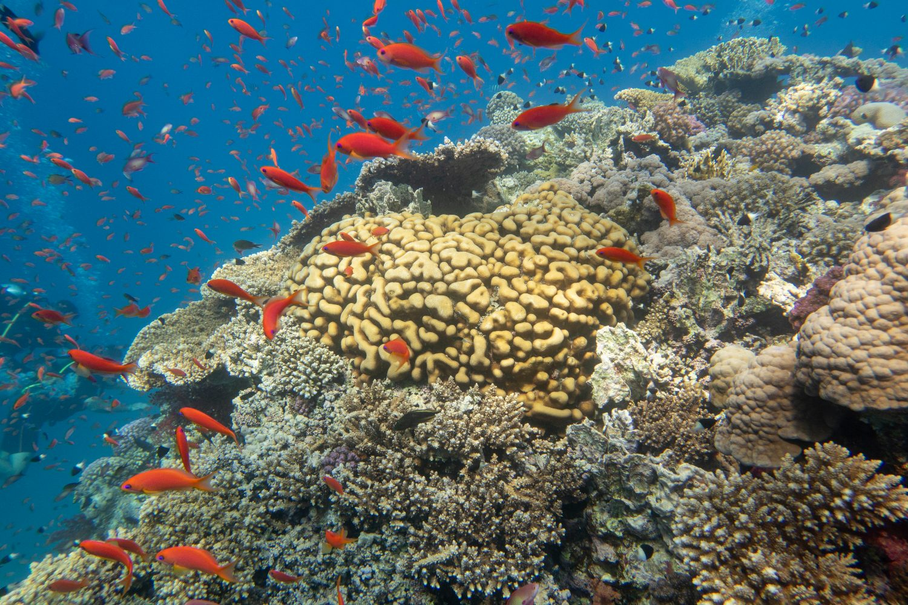

This is the argument for Bundaberg that needs the least explaining. You are living on the doorstep of the southern Great Barrier Reef, with a nationally significant turtle rookery a fifteen-minute drive away.
Fifteen to twenty minutes: Bargara & Mon Repos
Bundaberg’s coast and its main beach suburb, with calm swimming beaches, coral rock pools and a headland walk. Mon Repos, just north, is Australia’s largest mainland loggerhead turtle rookery — nesting and hatchling season runs roughly November to March, and it is the kind of thing that stays a family ritual long after the novelty wears off.

Thirty minutes: Elliott Heads & Coral Cove
Quieter than Bargara, with the Elliott River mouth for fishing and paddling as well as the beach. This is where people go when they want the coast without anyone else on it.
By boat or by air: Lady Musgrave & Lady Elliot Islands
Ninety minutes: Agnes Water & the Town of 1770
Queensland’s northernmost surf beach, and the site of Cook’s second landing on the Australian coast. Part of the Discovery Coast that the region’s health service also covers, and a genuine day trip or overnight from Bundaberg.
In the city itself
- A tour of the historic rum distillery
- The Burnett River foreshore and its walking paths
- Baldwin Swamp wetlands, a short walk from the centre
- The Bundaberg Botanic Gardens, including the Hinkler aviation heritage exhibit
- Local produce and craft markets
- Turtle watching at Mon Repos in season
- A drive through the canefields at crushing season
- Sunset at Bargara headland
You get the reef without the queue, and the turtles without the tour bus.
Bargara in fifteen minutes, the turtle rookery a family ritual every summer, and the southern Great Barrier Reef a day trip rather than a holiday. Bundaberg is not near the reef — it is one of the closest cities to it, and that is what keeps people here after the job stops being new.